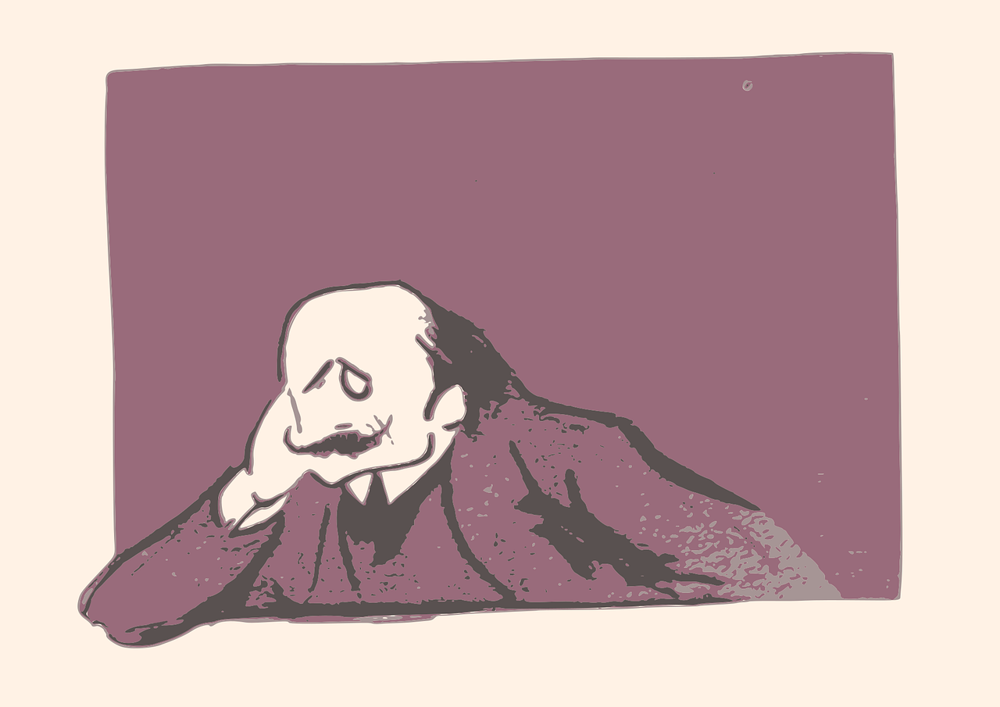

شاعری کی دنیا 
جون ایلیا
عمر گزرے گی امتحان میں کیا
داغ ہی دیں گے مجھ کو دان میں کیا
میری ہر بات بے اثر ہی رہی
نقص ہے کچھ مرے بیان میں کیا
مجھ کو تو کوئی ٹوکتا بھی نہیں
یہی ہوتا ہے خاندان میں کیا
اپنی محرومیاں چھپاتے ہیں
ہم غریبوں کی آن بان میں کیا
خود کو جانا جدا زمانے سے
آ گیا تھا مرے گمان میں کیا
شام ہی سے دکان دید ہے بند
نہیں نقصان تک دکان میں کیا
اے مرے صبح و شام دل کی شفق
تو نہاتی ہے اب بھی بان میں کیا
بولتے کیوں نہیں مرے حق میں
آبلے پڑ گئے زبان میں کیا
خامشی کہہ رہی ہے کان میں کیا
آ رہا ہے مرے گمان میں کیا
دل کہ آتے ہیں جس کو دھیان بہت
خود بھی آتا ہے اپنے دھیان میں کیا
وہ ملے تو یہ پوچھنا ہے مجھے
اب بھی ہوں میں تری امان میں کیا
یوں جو تکتا ہے آسمان کو تو
کوئی رہتا ہے آسمان میں کیا
ہے نسیم بہار گرد آلود
خاک اڑتی ہے اس مکان میں کیا
یہ مجھے چین کیوں نہیں پڑتا
ایک ہی شخص تھا جہان میں کیا
نیا اک رشتہ پیدا کیوں کریں ہم
بچھڑنا ہے تو جھگڑا کیوں کریں ہم
خموشی سے ادا ہو رسم دوری
کوئی ہنگامہ برپا کیوں کریں ہم
یہ کافی ہے کہ ہم دشمن نہیں ہیں
وفا داری کا دعویٰ کیوں کریں ہم
وفا اخلاص قربانی محبت
اب ان لفظوں کا پیچھا کیوں کریں ہم
سنا دیں عصمت مریم کا قصہ
پر اب اس باب کو وا کیوں کریں ہم
زلیخائے عزیزاں بات یہ ہے
بھلا گھاٹے کا سودا کیوں کریں ہم
ہماری ہی تمنا کیوں کرو تم
تمہاری ہی تمنا کیوں کریں ہم
کیا تھا عہد جب لمحوں میں ہم نے
تو ساری عمر ایفا کیوں کریں ہم
اٹھا کر کیوں نہ پھینکیں ساری چیزیں
فقط کمروں میں ٹہلا کیوں کریں ہم
جو اک نسل فرومایہ کو پہنچے
وہ سرمایہ اکٹھا کیوں کریں ہم
نہیں دنیا کو جب پروا ہماری
تو پھر دنیا کی پروا کیوں کریں ہم
برہنہ ہیں سر بازار تو کیا
بھلا اندھوں سے پردہ کیوں کریں ہم
ہیں باشندے اسی بستی کے ہم بھی
سو خود پر بھی بھروسا کیوں کریں ہم
چبا لیں کیوں نہ خود ہی اپنا ڈھانچہ
تمہیں راتب مہیا کیوں کریں ہم
پڑی رہنے دو انسانوں کی لاشیں
زمیں کا بوجھ ہلکا کیوں کریں ہم
یہ بستی ہے مسلمانوں کی بستی
یہاں کار مسیحا کیوں کریں ہم
تم حقیقت نہیں ہو حسرت ہو
جو ملے خواب میں وہ دولت ہو
میں تمہارے ہی دم سے زندہ ہوں
مر ہی جاؤں جو تم سے فرصت ہو
تم ہو خوشبو کے خواب کی خوشبو
اور اتنی ہی بے مروت ہو
تم ہو پہلو میں پر قرار نہیں
یعنی ایسا ہے جیسے فرقت ہو
تم ہو انگڑائی رنگ و نکہت کی
کیسے انگڑائی سے شکایت ہو
کس طرح چھوڑ دوں تمہیں جاناں
تم مری زندگی کی عادت ہو
کس لئے دیکھتی ہو آئینہ
تم تو خود سے بھی خوبصورت ہو
داستاں ختم ہونے والی ہے
تم مری آخری محبت ہو